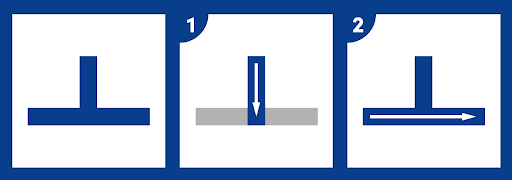
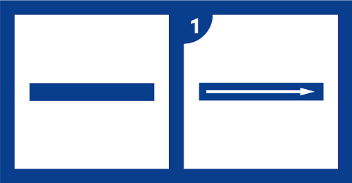
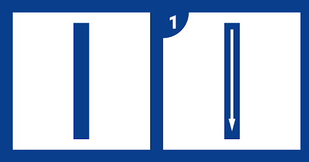
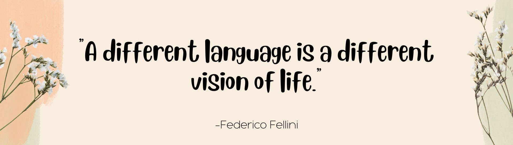
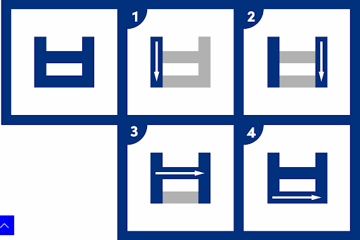
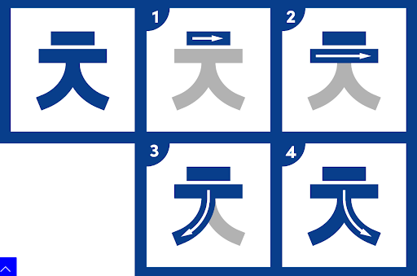
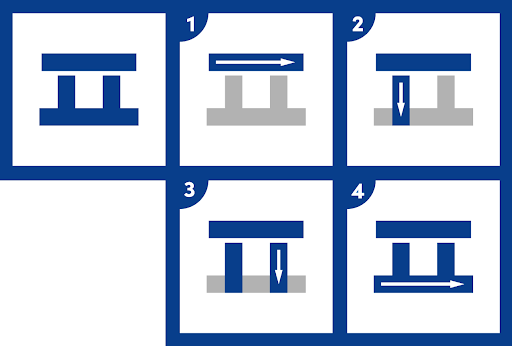

Vowels
A (ㅏ)
Step 1: Create a long downward stroke.
Step 2: Make a horizontal stroke in the middle to the right.
YA (ㅑ )
Step 1: Create a long downward stroke.
Step 2: Make a horizontal line in the upper middle to the right.
Step 3: Make a horizontal line in the lower middle to the right.
EO (ㅓ)
Step 1: Create a long downward stroke.
Step 2: Make a horizontal line in the middle to the right.
YEO (ㅕ)
Step 1: Create a long downward stroke.
Step 2: Make a horizontal line in the upper middle to the right.
Step 3: Make a horizontal line in the lower middle to the right.
O (ㅗ)
Step 1: Create a short downward stroke.
Step 2: Make a long horizontal line.
YO (ㅛ )
Step 1: Create two short downward strokes.
Step 2: Make a long horizontal line.
U (ㅜ)
Step 1: Create a long horizontal line
Step 2: Make a short vertical line in the middle going downward
YU (ㅠ)
Step 1: Create a long horizontal line
Step 2: Make a short vertical line in the middle right corner going downward.
Step 3: Make a short vertical line in the middle left corner going downward.
EU (ㅡ)
Step1: Create a long horizontal line.
I (ㅣ)
Step 1: Create a long vertical line.
These are the strokes typically used in hangul. Let’s keep on learning these writing strokes to be more fluent in writing Hangul!

Consonants
B (ㅂ)
Step 1: Create two vertical lines.
Step 2: Make connecting horizontal line in the middle.
Step 3: Make a connecting horizontal line in the lowest part.
CH (ㅊ)
Step 1: Create a small horizontal line.
Step 2: Make a longer horizontal line.
Step 3: Create a curve line connecting to the longer horizontal line to the right.
Step 4: Create a curve line connecting to the longer horizontal line to the left.
D (ㄷ)

Step 1: Create a horizontal line.
Step 2: In the right end of the horizontal line, make a vertical line downward.
Step 3: Connect the end of the vertical line into a horizontal line going right.
G (ㄱ)
Step 1: Create an inverted L.
H(ㅎ)
Step 1: Create a small horizontal line.
Step 2: Make a longer horizontal line.
Step 3: Draw an oblong below the long horizontal line.
J (ㅈ)
Step 1: Create a straight horizontal line.
Step 2: Make a vertical line connecting the right end.
Step 3: Create a horizontal line in the middle of the vertical line.
K (ㅋ)
Step 1: Create a straight horizontal line.
Step 2: Make a short vertical line connecting the right end.
Step 3: Create a straight horizontal line connected to the right end
Step 4: Make a short vertical line connecting the left end.
L (ㄹ)
Step 1: Start with a downward stroke at the left
Step 2: Add two more strokes going to the right then down, making a downward u
Step 3: Complete by closing the last open space with a stroke to the right
M (ㅁ)
Step 1: Create a vertical line.
Step 2: Connect a horizontal line in the end of the vertical line to the right.
N (ㄴ)
Step 1: Create a long horizontal line
Step 2: Make a short vertical line in the middle right corner going downward.
Step 3: Make a short vertical line in the middle left corner going downward.
Step 4: Connect both lines with a horizontal line.
P (ㅍ)
Step 1: Create a curve line connecting to the longer horizontal line to the right.
Step 2: Create a curve line connecting to the longer horizontal line to the left.
S (ㅅ)
Step 1:Create two horizontal lines.
Step 2: Connect the horizontal lines by a vertical line.
Step 3: At the end of the vertical line, connect a horizontal line to the right.
T (ㅌ)
Step 1: Create a circle.
IEUNG(ㅇ)
Step1: Create a long horizontal line.